프로그램안내
시설현황
| 시간 | 월 | 화 | 수 | 목 | 금 | 토 | 일 |
|---|---|---|---|---|---|---|---|
| 7시 | 종교활동 / 새벽예배 | ||||||
| 8시 | 아침식사 / 투약관리 | ||||||
| 9시 | 개인위생관리 / 청소 | ||||||
| 10시 | 활력증상체크 이미용서비스 |
건강체조 | 일상능력향상 촉탁의진료 |
건강체조 도서낭독 |
체력단련 | 찬송가교실 | 종교활동 주일예배 |
| 11시 | |||||||
| 12시 | 점심식사 / 투약관리 | ||||||
| 14시 | 오후 간식 | ||||||
| 15시 | 휘바스포츠 체력단련 |
이미용서비스 요리교실 현장체험 |
수요예배 생일잔치 자립생활지원 |
건강산책 | 치료레크레이션 노래교실 치과진료 |
자유시간 | 자유시간 |
| 16시 | |||||||
| 18시 | 점심식사 / 투약관리 | ||||||
- 거주지원사업 : 사례관리, 급 · 간식서비스 등
- 의료지원사업 : 물리치료, 작업치료, 언어치료, 투약관리, 치매검사, 구강검진, 건강검진, 예방접종, 외래진료 등
- 사회심리지원사업 : 야외나들이(월1회), 설・추석명절행사, 어버이날행사, 송년행사 등
- 거주지원사업 : 사례관리, 급 · 간식서비스 등
- 의료지원사업 : 물리치료, 작업치료, 언어치료, 투약관리, 치매검사, 구강검진, 건강검진, 예방접종, 외래진료 등
- 사회심리지원사업 : 야외나들이(월1회), 설・추석명절행사, 어버이날행사, 송년행사 등
사업 개요
일상능력과 자립능력 향상을 통해 신체적 청결, 정서적 안정 및 건강한 삶을 지원합니다.
활동 사진
-
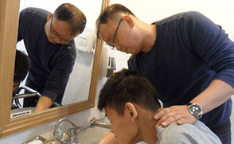개인위생관리
-
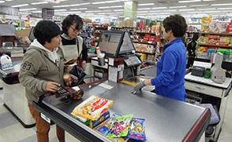현장체험
-
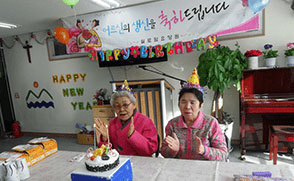생일잔치
-
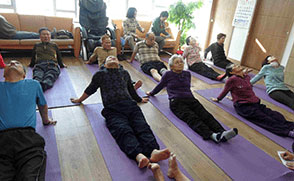건강체조
-
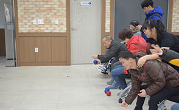휘바스포츠
-
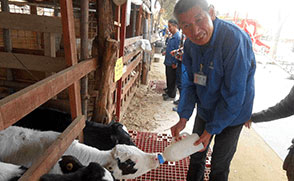야외나들이
주요사업안내
| 사업명 | 내용 |
|---|---|
| 개인위생관리 | 청소, 목욕, 세탁 등 개인위생을 수시로 관리하여 신체적 청결 및 건강을 유지하고, 청결한 환경에서 생활할 수 있도록 함. 또한 불결한 위생에서 발생할 수 있는 질병들을 미리 예방하여 건강하고 활기찬 생활을 영위하도록 지원함. |
| 이미용서비스 | 월1회 요양원 내에서 컷트, 염색 등의 서비스를 제공하여 신체적 청결을 유지하고, 천연팩과 마스크팩을 이용하여 자신을 꾸밈으로써 생활의 활력소를 얻으며, 스스로의 자존감과 자신감을 회복하고 건강한 생활을 영위하도록 지원함. |
| 예방교육 | 소방교육, 인권교육, 성희롱교육 등을 실시하여 화재시 신속하고 안전하게 대피하며, 인간의 존엄성과 권리를 세우고, 성적 수치심, 불쾌감을 느끼는 일이 없도록 예방하고자 함. |
| 도서낭독 | 이용자들이 읽고 싶어 하는 도서를 낭독함으로 서로의 생각을 공유하여 사회성 강화와 정서적 정화를 시킬 수 있는 기회를 제공함. |
| 휘바스포츠 | 지적장애 및 중복장애 이용자들을 대상으로 보치아, 넷볼, 티볼, 플로어볼 등을 실시함으로써 사회, 심리적 스트레스 해소와 기초체력을 향상시킬 수 있고 체육활동을 함으로 인해 대, 소근육의 발달과 체력향상에 도움이 될 수 있도록 지원함. |
| 치료레크레이션 | 마구마구 안전 다트놀이, 티볼배팅, 짐볼 굴리기, 낙하산계임, 플레이블 아트볼 등을 통해 이용자들 간의 친밀감을 향상시키고, 단합심과 협동심을 기를 수 있도록 하고자 함. 또한 정서적으로 이완을 얻고 삶의 즐거움을 느낄 수 있도록 기회를 제공함. |
| 야외나들이 | 유적지, 장터구경, 공원, 박물관 등을 통해 시설생활에서의 무료한 일상을 벗어나 평상시 접하기 어려운 체험활동을 실시하여, 일상에서의 스트레스를 해소하고 사회성을 함양시킴. |
| 생일잔치 | 월1회 자신의 생일을 기억하여 축하를 받으며, 다른 사람의 생일도 축하하도록 하여 자존감을 높일 수 있으며, 또한 즐거운 시간을 함께 하며 친목을 높이고 공동체 생활에 잘 적응하도록 지원함 |
| 요리교실 | 이용자들이 직접 먹고 싶은 간식을 만들어 먹음으로써 성취욕을 높이고 시설생활의 활력소를 제공함. |
| 현장체험 | 대형마트, 시장, 세탁소, 은행, 음식점 등을 체험함으로써 지역사회와 교류할 수 있는 기회를 제공하고, 사회성을 높여 삶의 활력을 주고자 함. |
| 체력단련 | 런닝머신, 자전거, 평행동, 복근운동 등을 활용하여 부족한 운동량을 보충하고, 노후에 발생할 수 있는 각종 질환과 장애 등을 예방하고 건강한 노후 생활을 보낼 수 있도록 함. |
| 건강체조 | 다양한 체조를 통해 시설생활과 중증장애로 인해 초래될 수 있는 부족한 운동량을 보충하고, 긴장된 근육을 풀어주고 자세를 바르게 교정시킴. |
사업 개요
우리 시설 이용자들 스스로의 문제를 발견하고 해결점을 찾기 위하여 스스로 상담을 요청할 수 있는 ‘내담자’가 아니기 때문에 심리치료적인 관점에서 모두가 장애를 가진 ‘환자’라는 것을 염두에 두고 전문상담요원의 역량을 발휘하여 이들의 심리를 치료하는데 중점을 두고 상담을 진행하고 있으며, 시각중복장애(지적, 청각) 및 지적장애의 경우는 생활재활교사들과의 연계를 통하여 생활상을 세부적으로 관찰함으로 말미암아 이들에게 보다 나은 사회복지서비스를 제공하고 있습니다.
활동 사진
-
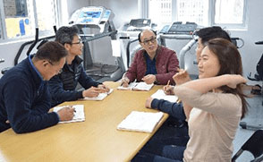사례관리
-
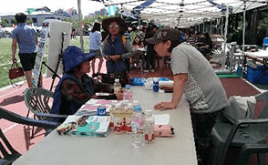입소상담
주요사업안내
| 사업명 | 내용 |
|---|---|
| 사례관리 | 청소, 목욕, 세탁 등 개인위생을 수시로 관리하여 신체적 청결 및 건강을 유지하고, 청결한 환경에서 생활할 수 있도록 함. 또한 불결한 위생에서 발생할 수 있는 질병들을 미리 예방하여 건강하고 활기찬 생활을 영위하도록 지원함. |
| 대외홍보 | 월1회 요양원 내에서 컷트, 염색 등의 서비스를 제공하여 신체적 청결을 유지하고, 천연팩과 마스크팩을 이용하여 자신을 꾸밈으로써 생활의 활력소를 얻으며, 스스로의 자존감과 자신감을 회복하고 건강한 생활을 영위하도록 지원함. |
| 자원봉사관리 | 소방교육, 인권교육, 성희롱교육 등을 실시하여 화재시 신속하고 안전하게 대피하며, 인간의 존엄성과 권리를 세우고, 성적 수치심, 불쾌감을 느끼는 일이 없도록 예방하고자 함. |
| 후원관리 | 이용자들이 읽고 싶어 하는 도서를 낭독함으로 서로의 생각을 공유하여 사회성 강화와 정서적 정화를 시킬 수 있는 기회를 제공함. |
사업 개요
언어치료, 물리치료, 작업치료 및 전문 의료기관의 연계를 통한 개별적인 의료서비스 제공으로 질병예방, 치료 및 상담 등을 시행하여 신체 및 정신 건강을 지원합니다.
활동 사진
-
촉탁의 진료
-
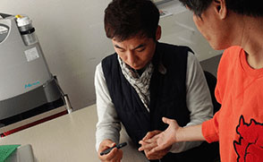활력증상체크
-
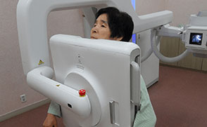건강검진
-
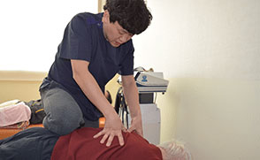물리치료
-
언어치료
-
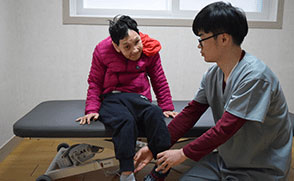작업치료
주요사업안내
| 사업명 | 내용 |
|---|---|
| 건강관리 | 건강상태를 정기적으로 체크하여 질병의 발병을 예방하고 환자를 조기 발견하여, 적절한 의료서비스 제공 및 개별적 건강계획을 수립하여 2차적인 합병증을 예방함. |
| 외래진료 | 전문 의료기관의 지속적이고 포괄적인 진료를 통한 정확한 진단으로 질병을 효율적으로 관리, 치료하여 고통과 증상을 경감시켜 빠른 회복을 도움. 또한 건강상 문제 발생시 신속한 조치가 가능하도록 자기관리능력을 향상시킴. |
| 예방교육 | 소방교육, 인권교육, 성희롱교육 등을 실시하여 화재시 신속하고 안전하게 대피하며, 인간의 존엄성과 권리를 세우고, 성적 수치심, 불쾌감을 느끼는 일이 없도록 예방하고자 함. |
| 활력증상체크 | 정기적인 혈압, 맥박, 호흡, 체온 등의 활력징후 측정을 통해 현재의 건강상태 유지 및 합병증을 예방하고, 기초체격검사를 통해 잠재적 질병을 예방하고 최적의 건강생활 유지를 도모함. |
| 촉탁의 진료 | 전문의사가 월 2회 본 요양원에 방문하여 입소자들의 건강상태, 질병의 유무 등을 파악하여 질병의 조기에 발견하고 적절한 치료를 할 수 있도록 하였음. |
| 물리치료 | 고령 중증 장애인들을 대상으로 장애특성에 따라 개별적 프로그램을 설정하여 운동치료, 온열치료, 전기치료, 광선치료, 관절가동법위운동, 일상생활동작 치료 등 물리적인 요소를 이용한 방법으로 손실된 기능을 회복시키고 잔존기능을 최대한 사용할 수 있도록 하기 위함. |
| 작업치료 | 일상생활동작훈련, 인지 및 지각능력향상훈련, 감각기능훈련, 손 기능, 운동 기능증진훈련 등 다양한 치료를 제공해 제공하여 잔존한 기능에서 최대한 독립적으로 일상생활을 수행할 수 있도록 하기 위함. |
| 언어치료 | 개별적 프로그램을 설정하여 구강 마사지, 호흡, 발성, 조음, 공명 및 기능적 의사소통(AAC) 등의 훈련을 통해 손실된 기능을 회복시키고 잔존기능을 최대한 사용할 수 있도록 하기 위함. |
사업 개요
시설의 유지관리로 이용자들과 직원들이 안전하게 이용할 수 있는 시설관리 분야, 이용자들의 이동을 돕는 운전원, 안전한 먹거리와 질 좋은 식사 제공을 위한 영양사 및 조리원, 쾌적한 주거환경을 만드는 위생원으로 구성 됩니다.
주요사업안내
| 사업명 | 내용 |
|---|---|
| 급식지원 | 이용자들에게 영양상 균형 있는 식사를 제공하여 건강한 생활을 유지시키고, 정기적인 위생 점검 및 안전점검을 통해 식품의 위생적 관리와 청결한 환경을 조성함으로써 식중독 사고를 미연에 방지함. 또한 계획적이고 합리적인 식당 및 식단 운영으로 깨끗하고 위생적인 환경을 만들어 이용자들에게 질 좋은 음식을 제공함으로써 건강의 도움을 주고자 함. |
| 시설관리 | 건물의 존속기간 동안 건물의 경제적 가치를 높이기 위해 설계 및 시공, 실내디자인부터 리노베이션, 유지관리에 이르기까지 전 과정을 통합 관리함. |
| 차량관리 | 새 차량 구매계획, 운용, 정비·보수, 갱신, 폐차 등 차량과 관련된 일련의 관리 업무를 진행함. |
| 미화관리 | 방문자와 이용자가 쾌적하고 깨끗한 공간에서 활동할 수 있도록. 미화 장비활용과 일일, 주간, 월간 미화활동 등을 통해 시설의 청결 유지함. |